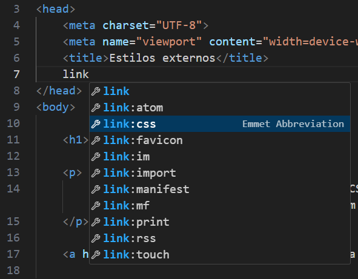
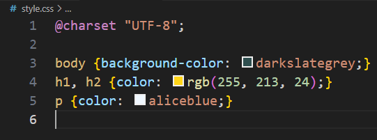

É possível importar um bloco de estilo CSS para várias páginas, facilitando o trabalho em códigos com um alto número de páginas.
Para fazer isso, ao invés de criar um bloco <style> abaixo da tag title, você deve criar um link.
Ao criar a tag link:css aparecerá o parâmetro rel="#" e o parâmetro href="#", assim como na tag <a>.
Para a fonte do href="#", criaremos um arquivo .css, que irá conter o bloco de estilo, e uma configuração para reconhecer caracteres especiais: @charset "UTF-8";.
